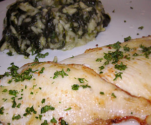

Spinatrisotto
5 von 6300 Jungspinat waschen und in etwas Butter dämpfen bis er zusammen fällt, gut abtropfen. Eine kleine Zwiebel in etwas Butter andämpfen, Risottoreis und den Spinat dazu geben. Mit Bouillon ablöschen. Nach und nach Wasser beigeben bis der Reis gar ist. Mit Salz, Pfeffer und Muskat würzen und mit Parmesan abschmecken, etwas ruhen lassen und servieren.
